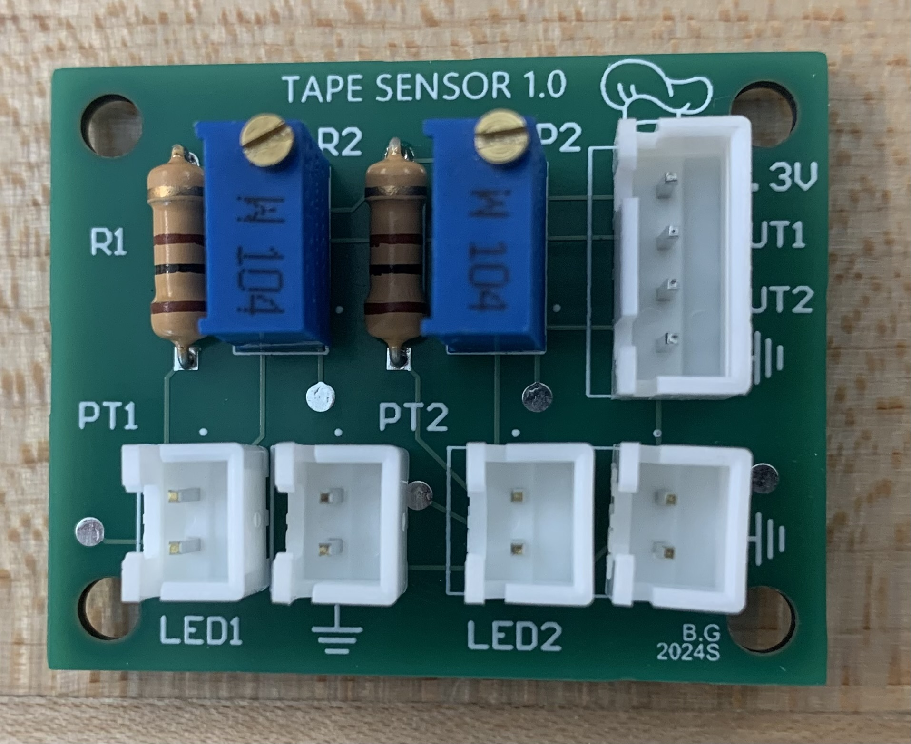

Electrical Design
Microcontroller Selection
We chose to use ESP32's over bluepills as ESP32's come with built in wireless communication capabilities, namely WiFi, Bluetooth, and ESP-NOW. I also just happened to have a bunch lying around :3
One thing to note is that on a lot of ESP32 dev boards, some analog pins share hardware with the WiFi/wireless communication which renders them unusable when ESP-NOW/WiFi is in use! We learned this the hard way D:
What is ESP-NOW?
- An efficient peer-to-peer communication protocol developed by Espressif specifically for ESP32 devices
- Does not require connection to an external central network
- Has low latency and low power consumption
Initial System Design
This was our initial electrical block diagram generated during our planning phase. We ended up not using rotary encoders or IR beacon sensors (though Brianna's prototype was still really cool!). We also chose not to include the limit switches and IR beam breaks in the interest of time.
We chose give our motors a seperate ground as we didn't want the electrical noise to couple to our sensitive sensors and microcontroller.
Initial Electrical System Design
H-Bridge Circuit
We made our own H-Bridge circuits to control our motors. On the right is a schematic showing how to control a motor using the LTC1161 motor driver IC. Our motor driver circuits were optoisolated from the rest of our circuit to contain noise.
How does an H-Bridge Work?
- An efficient peer-to-peer communication protocol developed by Espressif specifically for ESP32 devices
- Does not require connection to an external central network
- Has low latency and low power consumption
Completed PCB
This circuit was quite irritating to solder by hand and we had to make one for each robot, so we chose to make PCBs (also for the learning experience).
The PCB features a circuit similar to the one shown above, but makes use of the fact that the LTC1161 can support two motors at once. It also featured testpoints and a power LED that came in real handy during debugging!
We chose to not use SMD components on our PCB, using only components available in our lab instead as we receive those components for free. This also made it a lot easier and cheaper to swap out faulty parts (cough cough MOSFETs).
My teammate Brianna made the PCBss while I reviewed them and gave her guidance/advice.
H-Bridge Example Circuit

H-Bridge PCB Made by Brianna
Reflectance Sensors
We used TCRT5000s to detect the black tape on the white competition surface.
These sensors consist of an IR LED and a phototransistor. They essentially work by emitting IR light and then measure the amount of light that bounces back.
In our application, we pointed the TCRT directly down on the competition surface to detect the tape. When the TCRT shone on the black tape, the light would be absorbed and we would read a very high analog value. When the TCRT shone on the white competition surface, we would read a very low analog value.
We chose to use analog readings from our TCRT instead of a digital reading (on the tape vs off the tape). This was because we had 8 TCRTs per robot and we wanted to be able to easily tune the tape threshold We didn't want to painstakingly tune each potentiometer (16 total) each time we wanted to recalibrate! We also noticed that when the TCRT was placed directly in the middle of the black tape, we would read a very high value and as we moved the sensor further from the middle of the tape, we found that the readings would slowly decrease.
TCRT5000 Ciruit
Reflecantce Sensor PCB
Power Distribution
TODO :3